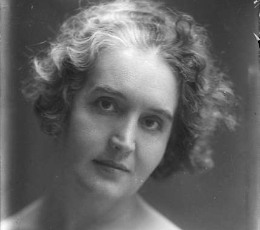
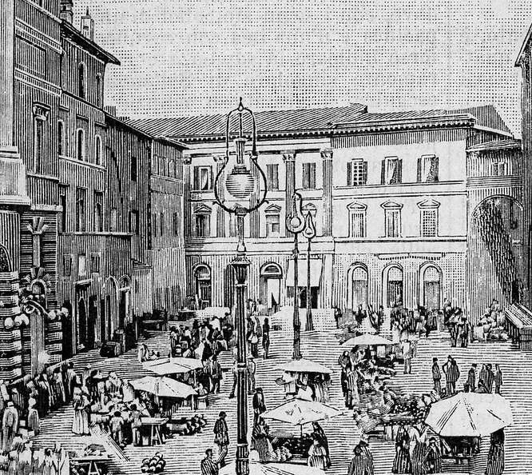
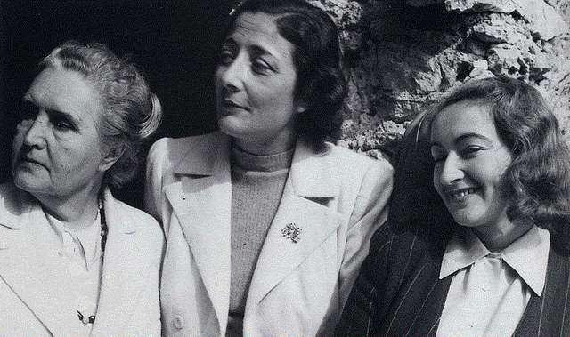

Una donna, una ragazza, una scrittrice, una sopravvissuta, una sognatrice, un’icona.
Marta Felicina (Rina) Faccio, in arte Sibilla Aleramo, è l’ispiratrice del progetto Non Solo Una Donna, che si concretizza in un sito web ed una community a lei dedicati.
Conosciamo la sua biografia, le figure che hanno incrociato il suo cammino, ed il suo romanzo “Una Donna”.

Una vita tra alti e bassi, un'esperienza umana complessa, talvolta oscura, ma piena di fascino.
Come Rina Faccio è diventata Sibilla Aleramo.

In Italia e all'estero, Sibilla Aleramo è figlia dei luoghi in cui ha vissuto. Un tour biografico, ma soprattutto culturale.
La fama letteraria e personale di Sibilla Aleramo è sancita dalla pubblicazione e diffusione del suo primo romanzo, "Una Donna", pubblicata nel 1906.

Sibilla Aleramo conosce decine di grandi donne ed uomini del suo tempo, figure di spicco per la cultura, la società, la letteratura e la filosofia. Osserviamo le influenze reciproche.